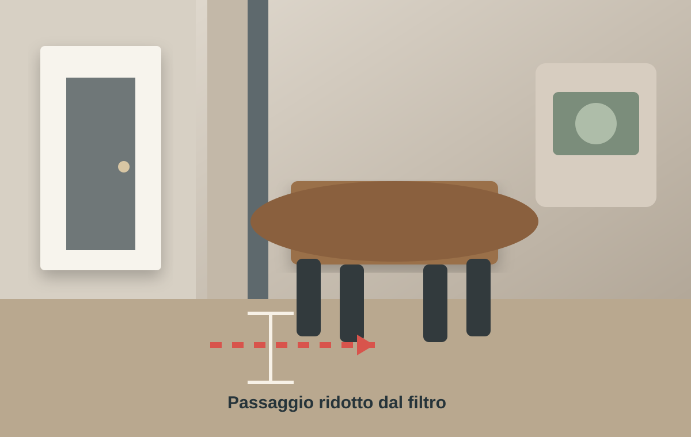

Cosa si guadagna
Un ingresso più ordinato e meno esposto alla vista diretta della zona pranzo.

Caso pratico zona giorno
Il problema non era soltanto nascondere la zona pranzo dalla porta. Era capire quanto spazio, luce e libertà di movimento sarebbe costata una nuova separazione.
Guarda il conflittoLa scena reale
La richiesta di creare un filtro d'ingresso aveva senso. Il rischio era però aggiungere una parete o un mobile troppo profondo proprio nello spazio che serviva al tavolo, alle sedie e al collegamento con la cucina.
Il compromesso nascosto
Un ingresso più ordinato e meno esposto alla vista diretta della zona pranzo.
Passaggio, luce, pareti utili e spazio per muovere le sedie senza urtare il nuovo filtro.
Cosa andava controllato
Se il filtro non risolve anche queste funzioni, rischia di essere soltanto un ostacolo visivo.
Il passaggio va verificato con persone sedute, non con il tavolo vuoto.
Una parete piena può togliere respiro a una stanza già contenuta.
Prima di costruire
Invia planimetria, foto e misure. Ti dirò se il caso è valutabile.
Invia il caso su WhatsApp